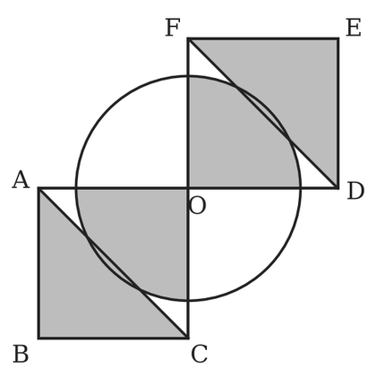

בעת מופע ראווה מטוס מעפילים עושה 10 לולאות מעגליות מלאות באוויר בדקה. אם רדיוסה של כל לולאה הוא 5 מטרים, מהי מהירותו של מטוס הראווה (במטרים לשנייה)?
הצגת הפתרון
התשובה הסופית1תשובה (1)בערך 5
דרך הפתרון והסבר
אורך לולאה אחת – היקף מעגל ברדיוס 5:2π · 5 = 10π ≈ 31.4 מטר10 לולאות בדקה:10 · 31.4 = 314 מטר בדקהבמטר לשנייה:31460 ≈ 5.2 מטר לשנייההתשובה: בערך 5.
💡 הלקח
מהירות = לולאות × היקף ÷ זמן; ממירים דקות לשניות.
🔁 דפוס חוזר: תנועה דרך = מהירות × זמן. זה לקראת זה – מחברים מהירויות; באותו כיוון – מחסירים.
🔁 דפוס חוזר: המרת יחידות ומה שואלים ממירים יחידות לפני החישוב, ובודקים באיזו יחידה מבקשים את התשובה.
מוקשים נפוצים
להמיר מדקה לשניות – לחלק ב־60.
נבדקהפתרון תואם את מפתח התשובות של הספר.
שאלה 2
לכל מספר a הוגדרה הפעולה $ כך: $(a) = 2(a + 1)
מה מהבאים נכון בהכרח?
הצגת הפתרון
התשובה הסופית4תשובה (4)אף אחת מהתשובות אינה נכונה בהכרח
דרך הפתרון והסבר
נחשב כל צד לפי $(a) = 2(a + 1):$(2a) = 2(2a + 1) = 4a + 2$(a + 22) =2(a + 22 + 1) =a + 2 + 2 =a + 4$(a + 4) = 2(a + 5) = 2a + 10משווים 4a + 2 מול 2a + 10:שווים כש־a = 4. גדול יותר כש־a > 4, קטן יותר כש־a < 4.התוצאה תלויה ב־a: תשובה (4).
💡 הלקח
פעולה בתוך פעולה – מחשבים מבפנים החוצה.
🔁 דפוס חוזר: פעולה מוגדרת מציבים בדיוק לפי ההגדרה, מבפנים החוצה, ושמים לב לסדר.
מוקשים נפוצים
פעולה בתוך פעולה – לחשב מבפנים החוצה.
נבדקהפתרון תואם את מפתח התשובות של הספר.
שאלה 3
a מתחלק ב־7 ללא שארית, b מתחלק ב־2 ללא שארית.
מה מהבאים אינו בהכרח נכון?
הצגת הפתרון
התשובה הסופית4תשובה (4)2a + 2b מתחלק ב־18 ללא שארית
דרך הפתרון והסבר
a = 7k ו־b = 2m. נבדוק כל טענה:(1) (2a)² + b² = 4a² + 4m² – זוגי תמיד ✓(2) 2ab = 2 · 7k · 2m = 28km – מתחלק ב־28 תמיד ✓(3) a²b² =49k² · 4m² =196k²m² =98 · 2k²m² – מתחלק ב־98 תמיד ✓(4) 2a + 2b = 14k + 4m – לא בהכרח מתחלק ב־18. דוגמה: a = 7, b = 4: 22 ✗התשובה: (4).
💡 הלקח
"אינו בהכרח נכון" – מספיקה דוגמה נגדית אחת.
🔁 דפוס חוזר: בחירת מספרים נוחים ביחסים ובטענות "בהכרח" – מציבים מספרים נוחים ובודקים.
🔁 דפוס חוזר: דוגמה נגדית כדי לפסול "בהכרח" מספיקה דוגמה אחת. בודקים שליליים, 0 ושברים.
מוקשים נפוצים
"אינו בהכרח נכון" – מספיקה דוגמה נגדית אחת.
נבדקהפתרון תואם את מפתח התשובות של הספר.
שאלה 4
בסרטוט שלפניכם מעגל ש־AC קוטרו.
נתון: AB = ⅓BC
הקשת AB מהווה חצי מעגל ש־AB קוטרו.
הקשת BC מהווה חצי מעגל ש־BC קוטרו.
מה מהבאים נכון בהכרח?
הצגת הפתרון
התשובה הסופית2תשובה (2)אורך הקו המודגש שווה לחצי היקף המעגל הגדול שבסרטוט
דרך הפתרון והסבר
חצי היקף של מעגל שקוטרו d הוא πd2.הקו המודגש מורכב משני חצאי מעגלים:על AB: π · AB2על BC: π · BC2יחד: π(AB + BC)2 = π · AC2וזה בדיוק חצי ההיקף של המעגל הגדול (שקוטרו AC).הנתון AB = 13BC לא משנה דבר – השוויון נכון לכל חלוקה של הקוטר.
💡 הלקח
חצאי מעגלים על קטעי הקוטר מסתכמים תמיד לחצי ההיקף הגדול.
🔁 דפוס חוזר: מעגלים חסומים ומשיקים מבטאים הכול ברדיוס. רדיוס לנקודת השקה ניצב למשיק. 📐 לדף הנוסחאות
מוקשים נפוצים
חצאי מעגלים על קטעים של הקוטר תמיד מסתכמים לחצי ההיקף.
נבדקהפתרון תואם את מפתח התשובות של הספר.
שאלה 5
חיידק מתרבה ומכפיל את עצמו כל שעה. בשעה 8:00 הניח מדען חיידק אחד בצלוחית, ובנוסף, בסופה של כל שעה עגולה, הוסיף מספר חיידקים השווה למספר החיידקים שנוצרו באותה השעה.
כמה חיידקים הוסיף המדען לצלוחית בשעה 12:00?
הצגת הפתרון
התשובה הסופית1תשובה (1)27
דרך הפתרון והסבר
בכל שעה החיידקים מכפילים את עצמם: אם היו n, נוצרים n חדשים.בסוף השעה המדען מוסיף עוד n (כמספר שנוצרו). לכן מכל n מגיעים ל־3n.8:00 – 1 חיידק.9:00 – נוצר 1, נוסף 1: 3.10:00 – נוצרו 3, נוספו 3: 9.11:00 – נוצרו 9, נוספו 9: 27.12:00 – נוצרו 27, ולכן המדען מוסיף 27.
💡 הלקח
מתקדמים שעה אחר שעה; לשים לב ששואלים כמה הוסיף, לא כמה יש.
🔁 דפוס חוזר: ציר זמן צעד אחר צעד כשמשהו חוזר במחזורים – כותבים את ציר הזמן ובודקים שלב אחר שלב.
מוקשים נפוצים
השאלה שואלת כמה הוסיף ב־12:00 (27), לא כמה יש בצלוחית (81).
נבדקהפתרון תואם את מפתח התשובות של הספר.
שאלה 6
נתון: x < y < z < |y|
איזה מהביטויים הבאים חיובי בהכרח?
הצגת הפתרון
התשובה הסופית4תשובה (4)y · (x + z)
דרך הפתרון והסבר
y < |y| קורה רק כש־y שלילי.x < y, ולכן גם x שלילי.z < |y| = −y, ולכן z + y < 0.x + z < y + z < 0 (כי x < y).בתשובה (4): y שלילי ו־(x + z) שלילי – המכפלה חיובית ✓שאר התשובות לא בהכרח. למשל x = −5, y = −3, z = 2:(1) y − (z + x) =−3 − (−3) =0 – לא חיובי ✗(3) y · z = −6 – שלילי ✗(2) עם z = −1: x − (y + z) = −5 + 4 = −1 ✗
💡 הלקח
y < |y| ⇔ y שלילי – זה המפתח.
🔁 דפוס חוזר: ערך מוחלט|x| הוא המרחק של x מ־0. |x| = k ⇒ x = k או x = −k.
מוקשים נפוצים
מ־y < |y| מסיקים ש־y שלילי – זה המפתח.
נבדקהפתרון תואם את מפתח התשובות של הספר.
שאלה 7
דני ולירון בוחרים באקראי מספר שלם מבין המספרים 1, 0 ו־−1.
מה ההסתברות שסכום הבחירות שלהם יהיה מספר שאינו שלילי?
הצגת הפתרון
התשובה הסופית3תשובה (3)23
דרך הפתרון והסבר
כל אחד בוחר אחד מ־3 מספרים: יש 3 · 3 = 9 זוגות, באותו סיכוי.מתי הסכום שלילי?(−1, −1), (−1, 0), (0, −1) – 3 זוגות.הסכום אינו שלילי בשאר 6 הזוגות:69 = 23
💡 הלקח
"אינו שלילי" כולל 0. סופרים זוגות סדורים מתוך 9.
🔁 דפוס חוזר: ספירה וסידורים מכפילים את מספר האפשרויות בכל שלב. צמודים = גוש אחד. זוגות מתוך n: n(n − 1)2.
🔁 דפוס חוזר: הסתברות סיכוי = רצוי חלקי כולל. "לפחות אחד" – דרך המשלים.
מוקשים נפוצים
"אינו שלילי" כולל גם סכום 0.
נבדקהפתרון תואם את מפתח התשובות של הספר.
שאלה 8

בסרטוט שלפניכם שני ריבועים חופפים: ABCO ו־FODE. מרכז המעגל, שרדיוסו r, הוא הנקודה O.
נתון: AO = ⁴⁄₃r
מה מהבאים נכון בהכרח?
הצגת הפתרון
התשובה הסופית1תשובה (1)סכום שטחי שני המשולשים האפורים גדול מסכום שטחי הגזרות האפורות
דרך הפתרון והסבר
צלע כל ריבוע: s = AO = 43r.המשולשים האפורים – כל אחד חצי ריבוע (האלכסון חוצה אותו):שניים יחד: 2 · s²2 = s² = 169r² ≈ 1.78r²הגזרות האפורות – בכל ריבוע רבע עיגול (הזווית ב־O ישרה):שתיים יחד: 2 · πr²4 = πr²2 ≈ 1.57r²1.78 > 1.57, ולכן סכום שטחי המשולשים גדול יותר: תשובה (1).
💡 הלקח
מבטאים הכול ב־r ומשווים מקדמים (16/9 מול π/2).
🔁 דפוס חוזר: מעגלים חסומים ומשיקים מבטאים הכול ברדיוס. רדיוס לנקודת השקה ניצב למשיק. 📐 לדף הנוסחאות
מוקשים נפוצים
משווים את המקדמים: 169 ≈ 1.78 מול π2 ≈ 1.57.
נבדקהפתרון תואם את מפתח התשובות של הספר.
שאלה 9
כמה מספרים ארבע־ספרתיים קיימים בהם ספרת המאות גדולה ב־5 מספרת האחדות, וספרת העשרות גדולה פי 3 מספרת האלפים?
הצגת הפתרון
התשובה הסופית4תשובה (4)15
דרך הפתרון והסבר
נסמן את הספרות: אלפים a, מאות b, עשרות c, אחדות d.b = d + 5:d יכולה להיות 0 עד 4 (אחרת b > 9): 5 אפשרויות.c = 3a, ו־a לפחות 1 (מספר ארבע־ספרתי):(a, c) = (1, 3), (2, 6), (3, 9): 3 אפשרויות.הבחירות בלתי תלויות:5 · 3 = 15
💡 הלקח
מגבלות על ספרות קובעות כמה ערכים אפשריים לכל אחת; כופלים.
🔁 דפוס חוזר: ספרת האחדות ספרת האחדות של תוצאה תלויה רק בספרות האחדות, ובחזקות היא חוזרת במחזור.
🔁 דפוס חוזר: ספרות וערך מקום כותבים מספר לפי ערך המקום: 100a + 10b + c.
מוקשים נפוצים
ספרת האלפים לא יכולה להיות 0, אבל ספרת האחדות כן.
נבדקהפתרון תואם את מפתח התשובות של הספר.
שאלה 10
נתון: a < b < c < 0
איזו מהטענות הבאות נכונה בהכרח?
הצגת הפתרון
התשובה הסופית2תשובה (2)a+cb+c > b+ca+b
דרך הפתרון והסבר
a < b < c < 0, ולכן |a| > |b| > |c|. כל הסכומים שליליים.a + cb + c: שלילי חלקי שלילי – חיובי. |a + c| > |b + c| (כי |a| > |b|):a + cb + c > 1b + ca + b: |b + c| < |a + b| (כי |c| < |a|):b + ca + b < 1לכן a + cb + c > b + ca + b: תשובה (2).דוגמה: a = −3, b = −2, c = −1: −4−3 ≈ 1.33 > −3−5 = 0.6 ✓
💡 הלקח
כשהכול שלילי – משווים ערכים מוחלטים.
🔁 דפוס חוזר: ערך מוחלט|x| הוא המרחק של x מ־0. |x| = k ⇒ x = k או x = −k.
🔁 דפוס חוזר: ממוצע משוקלל וסכומים עובדים עם סכומים (ממוצע × כמות) – לא מחברים ולא מחסרים ממוצעים.
מוקשים נפוצים
כשהכול שלילי, משווים ערכים מוחלטים – השבר עם המונה הגדול יותר גדול מ־1.